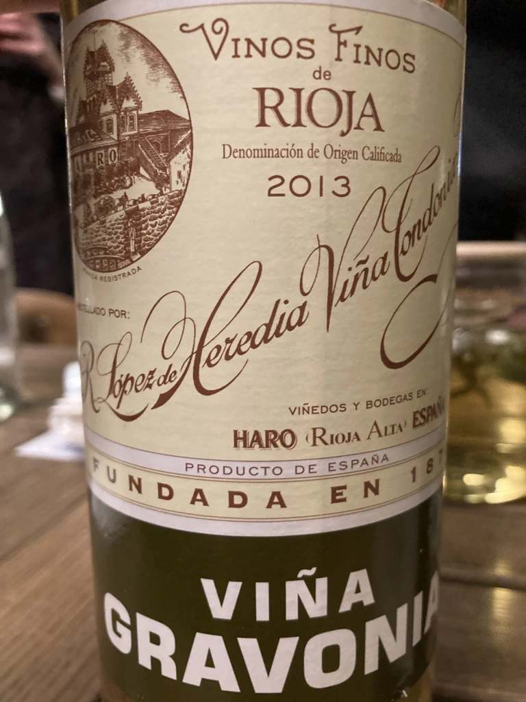
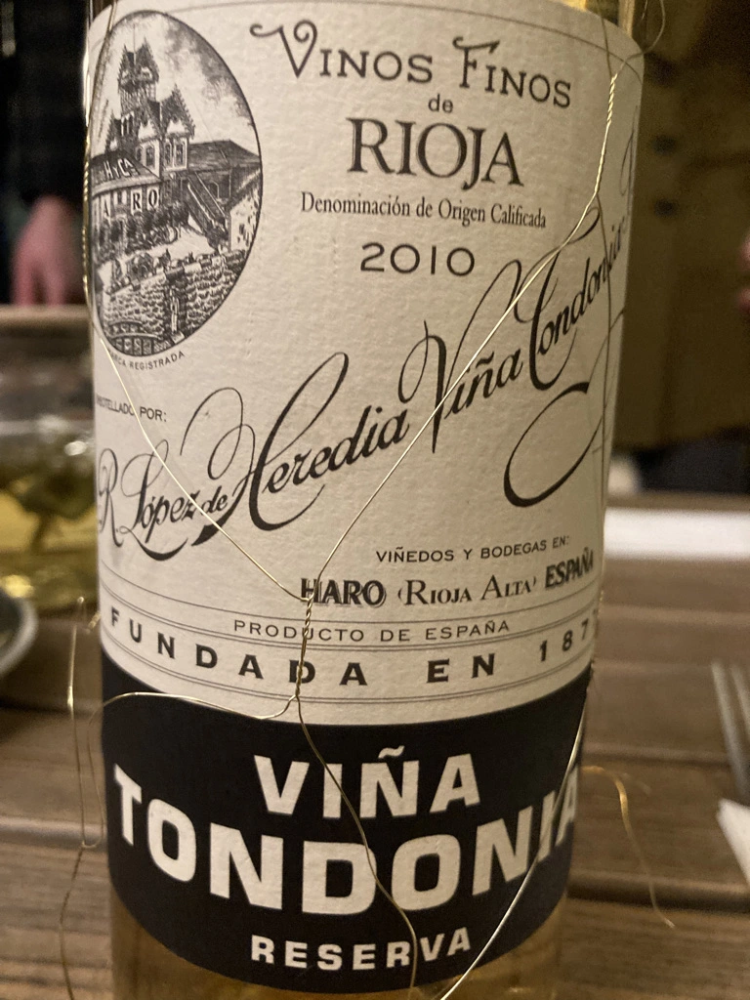
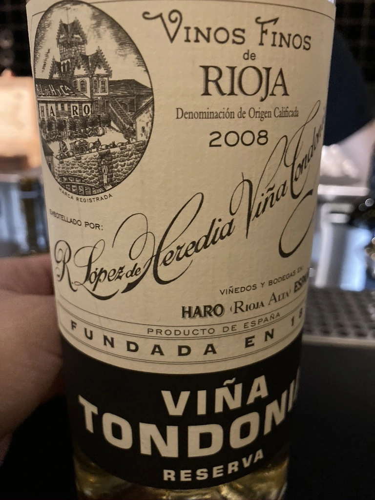
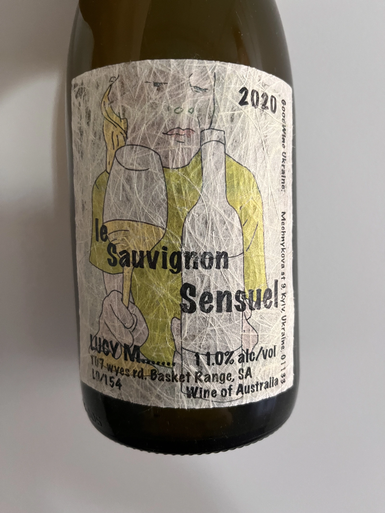
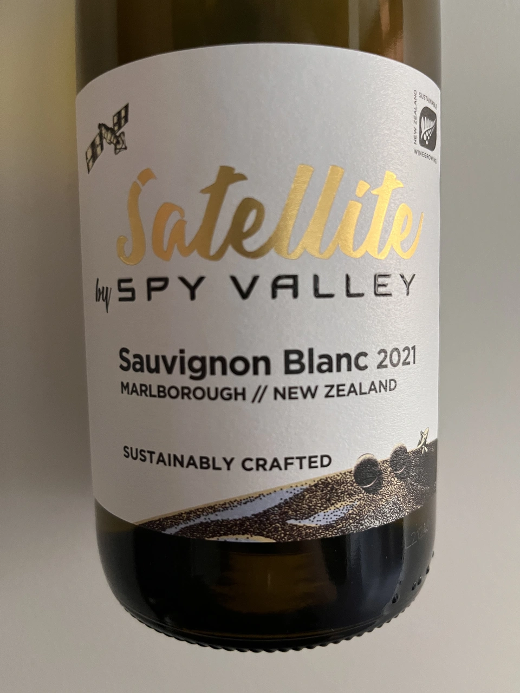

- Type
- White Still, Dry
- Producer
- Viña Tondonia
- Vintage
- 2013
- Location
- Spain, Rioja DOC
- Grapes
- Macabeo
- Alcohol
- 12.5
- Sugar
- 2.5
- Price
- 890 UAH
- Cellar
- N/A
Ratings
2022-06-10 - 8.00
Great wine, but felt a little bit dull. Maybe bottle variation, cause I remember it richer. Nevertheless, complex oxidative nose, herbs, nuts, pineapple, amber and butter with some hints of apricots. Well balanced, round with long aftertaste. Definitely will look into tasting it again (this and next releases), because wine is amazingly good, just like QPR. Still has potential, but already enjoyable.
Tasting multiple whites from R. Lopez de Heredia reminds me that I haven’t tested their reds since 2020.
- S. It’s funny that I have a photo of this wine from my last tasting, but no tasting notes. And I have these tasting notes, but forgot to make a photo of this bottle that spent several months in my ‘cellar’.
Related




